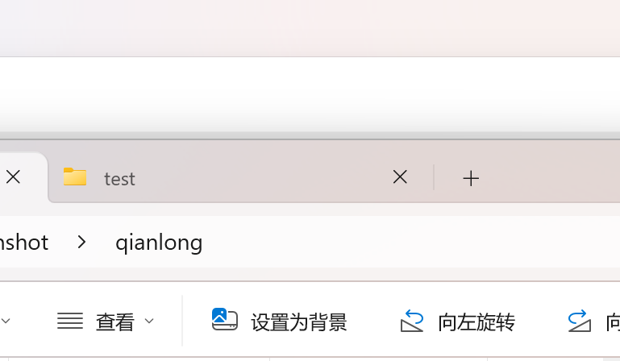
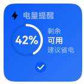
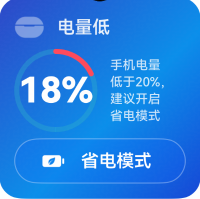
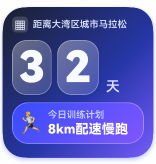
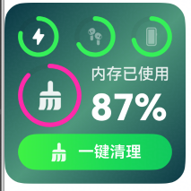
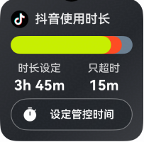

纯规则美学批量检测报告
40图片数量
70.22平均分
| 卡片 | 图片 | 总分 | 等级 | 可信度 | 维度分 | 详情报告 | 警告 |
|---|---|---|---|---|---|---|---|
 | 1.1.png | 68.78 | C | 88.04% | 信息完整性：0.0 / 布局美学：80.3 / 视觉设计：55.9 / 设计一致性：58.6 | 查看详情 | DSL 文件不存在：C:\Users\afan\Desktop\loop iteration\dsl\1.1.jsonl；指标跳过：组件尺寸一致性：检测到的组件少于 2 个；指标跳过：图标尺寸一致性：检测到的图标少于 2 个；另有 3 条 |
| 1.2.png | 71.56 | B | 86.92% | 信息完整性：0.0 / 布局美学：83.5 / 视觉设计：55.4 / 设计一致性：73.8 | 查看详情 | DSL 文件不存在：C:\Users\afan\Desktop\loop iteration\dsl\1.2.jsonl；指标跳过：组件尺寸一致性：检测到的组件少于 2 个；指标跳过：图标尺寸一致性：检测到的图标少于 2 个；另有 3 条 | |
 | 1.3.png | 78.23 | B | 94.42% | 信息完整性：0.0 / 布局美学：80.1 / 视觉设计：76.1 / 设计一致性：76.5 | 查看详情 | DSL 文件不存在：C:\Users\afan\Desktop\loop iteration\dsl\1.3.jsonl；指标跳过：组件尺寸一致性：检测到的组件少于 2 个；指标跳过：图标尺寸一致性：检测到的图标少于 2 个；另有 3 条 |
 | 10.png | 52.14 | D | 100.00% | 信息完整性：0.0 / 布局美学：45.0 / 视觉设计：58.1 / 设计一致性：67.1 | 查看详情 | DSL 文件不存在：C:\Users\afan\Desktop\loop iteration\dsl\10.jsonl；指标跳过：组件尺寸一致性：检测到的组件少于 2 个；指标跳过：内边距一致性：没有可估算文字内边距的组件；另有 3 条 |
 | 11.png | 53.19 | D | 58.75% | 信息完整性：0.0 / 布局美学：50.4 / 视觉设计：59.7 / 设计一致性：41.0 | 查看详情 | DSL 文件不存在：C:\Users\afan\Desktop\loop iteration\dsl\11.jsonl；指标权重未配置为正数：视觉焦点；指标权重未配置为正数：视觉层级；另有 1 条 |
 | 12.png | 57.32 | D | 95.76% | 信息完整性：0.0 / 布局美学：61.0 / 视觉设计：46.7 / 设计一致性：82.8 | 查看详情 | DSL 文件不存在：C:\Users\afan\Desktop\loop iteration\dsl\12.jsonl；指标跳过：组件尺寸一致性：检测到的组件少于 2 个；指标跳过：内边距一致性：没有可估算文字内边距的组件；另有 3 条 |
| 13.png | 55.50 | D | 76.19% | 信息完整性：0.0 / 布局美学：65.3 / 视觉设计：48.1 / 设计一致性：31.6 | 查看详情 | DSL 文件不存在：C:\Users\afan\Desktop\loop iteration\dsl\13.jsonl；指标跳过：内边距一致性：没有可估算文字内边距的组件；指标跳过：图标尺寸一致性：检测到的图标少于 2 个；另有 4 条 | |
 | 14.png | 70.98 | B | 76.19% | 信息完整性：0.0 / 布局美学：85.3 / 视觉设计：62.2 / 设计一致性：27.1 | 查看详情 | DSL 文件不存在：C:\Users\afan\Desktop\loop iteration\dsl\14.jsonl；指标跳过：内边距一致性：没有可估算文字内边距的组件；指标跳过：图标尺寸一致性：检测到的图标少于 2 个；另有 4 条 |
| 2.1.png | 65.90 | C | 97.93% | 信息完整性：0.0 / 布局美学：72.1 / 视觉设计：55.7 / 设计一致性：74.5 | 查看详情 | DSL 文件不存在：C:\Users\afan\Desktop\loop iteration\dsl\2.1.jsonl；指标跳过：组件尺寸一致性：检测到的组件少于 2 个；指标跳过：图标尺寸一致性：检测到的图标少于 2 个；另有 3 条 | |
| 2.2.png | 79.26 | B | 99.77% | 信息完整性：0.0 / 布局美学：88.5 / 视觉设计：70.6 / 设计一致性：63.8 | 查看详情 | DSL 文件不存在：C:\Users\afan\Desktop\loop iteration\dsl\2.2.jsonl；指标跳过：组件尺寸一致性：检测到的组件少于 2 个；指标跳过：圆角一致性：可用圆角样本少于 2 个；另有 4 条 | |
 | 3.1.png | 71.50 | B | 98.33% | 信息完整性：0.0 / 布局美学：83.2 / 视觉设计：55.9 / 设计一致性：72.4 | 查看详情 | DSL 文件不存在：C:\Users\afan\Desktop\loop iteration\dsl\3.1.jsonl；指标跳过：组件尺寸一致性：检测到的组件少于 2 个；指标跳过：圆角一致性：可用圆角样本少于 2 个；另有 5 条 |
 | 3.2.png | 75.25 | B | 98.45% | 信息完整性：0.0 / 布局美学：79.9 / 视觉设计：71.7 / 设计一致性：64.1 | 查看详情 | DSL 文件不存在：C:\Users\afan\Desktop\loop iteration\dsl\3.2.jsonl；指标跳过：组件尺寸一致性：检测到的组件少于 2 个；指标跳过：圆角一致性：可用圆角样本少于 2 个；另有 5 条 |
| 4.1.png | 74.29 | B | 90.70% | 信息完整性：0.0 / 布局美学：81.3 / 视觉设计：65.3 / 设计一致性：73.7 | 查看详情 | DSL 文件不存在：C:\Users\afan\Desktop\loop iteration\dsl\4.1.jsonl；指标跳过：组件尺寸一致性：检测到的组件少于 2 个；指标跳过：圆角一致性：可用圆角样本少于 2 个；另有 5 条 | |
 | 4.2.png | 81.79 | B+ | 90.99% | 信息完整性：0.0 / 布局美学：87.5 / 视觉设计：76.1 / 设计一致性：73.9 | 查看详情 | DSL 文件不存在：C:\Users\afan\Desktop\loop iteration\dsl\4.2.jsonl；指标跳过：组件尺寸一致性：检测到的组件少于 2 个；指标跳过：圆角一致性：可用圆角样本少于 2 个；另有 5 条 |
| 5.1.png | 71.93 | B | 94.83% | 信息完整性：0.0 / 布局美学：80.4 / 视觉设计：60.0 / 设计一致性：75.2 | 查看详情 | DSL 文件不存在：C:\Users\afan\Desktop\loop iteration\dsl\5.1.jsonl；指标跳过：组件尺寸一致性：检测到的组件少于 2 个；指标跳过：圆角一致性：可用圆角样本少于 2 个；另有 5 条 | |
 | 5.2.png | 72.78 | B | 99.39% | 信息完整性：0.0 / 布局美学：84.5 / 视觉设计：57.6 / 设计一致性：71.9 | 查看详情 | DSL 文件不存在：C:\Users\afan\Desktop\loop iteration\dsl\5.2.jsonl；指标跳过：图标尺寸一致性：检测到的图标少于 2 个；指标权重未配置为正数：视觉焦点；另有 2 条 |
 | 6.1.png | 78.34 | B | 99.63% | 信息完整性：0.0 / 布局美学：83.5 / 视觉设计：73.2 / 设计一致性：71.2 | 查看详情 | DSL 文件不存在：C:\Users\afan\Desktop\loop iteration\dsl\6.1.jsonl；指标跳过：组件尺寸一致性：检测到的组件少于 2 个；指标跳过：图标尺寸一致性：检测到的图标少于 2 个；另有 3 条 |
 | 6.2.png | 72.43 | B | 99.77% | 信息完整性：0.0 / 布局美学：85.3 / 视觉设计：58.2 / 设计一致性：61.0 | 查看详情 | DSL 文件不存在：C:\Users\afan\Desktop\loop iteration\dsl\6.2.jsonl；指标跳过：组件尺寸一致性：检测到的组件少于 2 个；指标跳过：圆角一致性：可用圆角样本少于 2 个；另有 5 条 |
 | 7.1.png | 73.32 | B | 92.15% | 信息完整性：0.0 / 布局美学：79.0 / 视觉设计：65.3 / 设计一致性：75.9 | 查看详情 | DSL 文件不存在：C:\Users\afan\Desktop\loop iteration\dsl\7.1.jsonl；指标跳过：组件尺寸一致性：检测到的组件少于 2 个；指标跳过：图标尺寸一致性：检测到的图标少于 2 个；另有 3 条 |
| 7.2.png | 66.32 | C | 76.93% | 信息完整性：0.0 / 布局美学：81.8 / 视觉设计：48.8 / 设计一致性：54.0 | 查看详情 | DSL 文件不存在：C:\Users\afan\Desktop\loop iteration\dsl\7.2.jsonl；指标跳过：组件尺寸一致性：检测到的组件少于 2 个；指标跳过：图标尺寸一致性：检测到的图标少于 2 个；另有 4 条 | |
 | 8.1.png | 64.36 | C | 98.74% | 信息完整性：0.0 / 布局美学：65.8 / 视觉设计：58.0 / 设计一致性：83.7 | 查看详情 | DSL 文件不存在：C:\Users\afan\Desktop\loop iteration\dsl\8.1.jsonl；指标跳过：组件尺寸一致性：检测到的组件少于 2 个；指标跳过：图标尺寸一致性：检测到的图标少于 2 个；另有 3 条 |
| 8.2.png | 79.10 | B | 99.64% | 信息完整性：0.0 / 布局美学：81.6 / 视觉设计：75.9 / 设计一致性：79.0 | 查看详情 | DSL 文件不存在：C:\Users\afan\Desktop\loop iteration\dsl\8.2.jsonl；指标跳过：组件尺寸一致性：检测到的组件少于 2 个；指标跳过：图标尺寸一致性：检测到的图标少于 2 个；另有 3 条 | |
| 9.1.png | 77.49 | B | 98.53% | 信息完整性：0.0 / 布局美学：76.7 / 视觉设计：79.9 / 设计一致性：71.8 | 查看详情 | DSL 文件不存在：C:\Users\afan\Desktop\loop iteration\dsl\9.1.jsonl；指标跳过：组件尺寸一致性：检测到的组件少于 2 个；指标跳过：图标尺寸一致性：检测到的图标少于 2 个；另有 3 条 | |
 | 9.2.png | 78.63 | B | 98.97% | 信息完整性：0.0 / 布局美学：83.0 / 视觉设计：75.5 / 设计一致性：67.1 | 查看详情 | DSL 文件不存在：C:\Users\afan\Desktop\loop iteration\dsl\9.2.jsonl；指标跳过：组件尺寸一致性：检测到的组件少于 2 个；指标跳过：圆角一致性：可用圆角样本少于 2 个；另有 5 条 |
 | battery.png | 76.57 | B | 92.16% | 信息完整性：98.6 / 布局美学：79.5 / 视觉设计：77.9 / 设计一致性：54.1 | 查看详情 | 指标跳过：组件尺寸一致性：检测到的组件少于 2 个；指标权重未配置为正数：视觉焦点；指标权重未配置为正数：视觉层级 |
| care.png | 70.56 | B | 69.98% | 信息完整性：46.0 / 布局美学：82.5 / 视觉设计：57.1 / 设计一致性：60.7 | 查看详情 | 指标跳过：组件尺寸一致性：检测到的组件少于 2 个；指标跳过：圆角一致性：可用圆角样本少于 2 个；指标跳过：内边距一致性：没有可估算文字内边距的组件；另有 3 条 | |
| earbuds.png | 52.09 | D | 54.76% | 信息完整性：97.1 / 布局美学：51.6 / 视觉设计：49.5 / 设计一致性：66.5 | 查看详情 | 指标跳过：组件尺寸一致性：检测到的组件少于 2 个；指标权重未配置为正数：视觉焦点；指标权重未配置为正数：视觉层级 | |
| focus.png | 78.61 | B | 97.22% | 信息完整性：100.0 / 布局美学：82.9 / 视觉设计：78.0 / 设计一致性：56.6 | 查看详情 | 指标跳过：组件尺寸一致性：检测到的组件少于 2 个；指标权重未配置为正数：视觉焦点；指标权重未配置为正数：视觉层级 | |
 | marathon.png | 72.07 | B | 98.98% | 信息完整性：100.0 / 布局美学：82.9 / 视觉设计：62.4 / 设计一致性：51.9 | 查看详情 | 指标跳过：组件尺寸一致性：检测到的组件少于 2 个；指标跳过：圆角一致性：可用圆角样本少于 2 个；指标跳过：内边距一致性：没有可估算文字内边距的组件；另有 3 条 |
| meeting.png | 74.65 | B | 98.73% | 信息完整性：100.0 / 布局美学：83.6 / 视觉设计：64.0 / 设计一致性：69.7 | 查看详情 | 指标跳过：组件尺寸一致性：检测到的组件少于 2 个；指标权重未配置为正数：视觉焦点；指标权重未配置为正数：视觉层级 | |
 | q1_2.png | 74.22 | B | 98.15% | 信息完整性：0.0 / 布局美学：74.6 / 视觉设计：76.9 / 设计一致性：60.3 | 查看详情 | DSL 文件不存在：C:\Users\afan\Desktop\loop iteration\dsl\q1_2.jsonl；指标跳过：组件尺寸一致性：检测到的组件少于 2 个；指标权重未配置为正数：视觉焦点；另有 2 条 |
 | q1_4.png | 72.38 | B | 95.23% | 信息完整性：0.0 / 布局美学：74.8 / 视觉设计：76.0 / 设计一致性：42.5 | 查看详情 | DSL 文件不存在：C:\Users\afan\Desktop\loop iteration\dsl\q1_4.jsonl；指标跳过：组件尺寸一致性：检测到的组件少于 2 个；指标权重未配置为正数：视觉焦点；另有 2 条 |
 | q2_2.png | 77.64 | B | 99.41% | 信息完整性：0.0 / 布局美学：82.2 / 视觉设计：78.4 / 设计一致性：48.3 | 查看详情 | DSL 文件不存在：C:\Users\afan\Desktop\loop iteration\dsl\q2_2.jsonl；指标跳过：组件尺寸一致性：检测到的组件少于 2 个；指标权重未配置为正数：视觉焦点；另有 2 条 |
 | q2_4.png | 64.89 | C | 99.74% | 信息完整性：0.0 / 布局美学：60.6 / 视觉设计：72.7 / 设计一致性：55.4 | 查看详情 | DSL 文件不存在：C:\Users\afan\Desktop\loop iteration\dsl\q2_4.jsonl；指标跳过：组件尺寸一致性：检测到的组件少于 2 个；指标权重未配置为正数：视觉焦点；另有 2 条 |
| q3_2.png | 55.21 | D | 90.22% | 信息完整性：0.0 / 布局美学：58.0 / 视觉设计：55.0 / 设计一致性：39.9 | 查看详情 | DSL 文件不存在：C:\Users\afan\Desktop\loop iteration\dsl\q3_2.jsonl；指标跳过：组件尺寸一致性：检测到的组件少于 2 个；指标权重未配置为正数：视觉焦点；另有 2 条 | |
| q3_4.png | 51.12 | D | 93.09% | 信息完整性：0.0 / 布局美学：47.2 / 视觉设计：59.3 / 设计一致性：38.1 | 查看详情 | DSL 文件不存在：C:\Users\afan\Desktop\loop iteration\dsl\q3_4.jsonl；指标跳过：组件尺寸一致性：检测到的组件少于 2 个；指标权重未配置为正数：视觉焦点；另有 2 条 | |
| sleep.png | 71.52 | B | 99.33% | 信息完整性：46.7 / 布局美学：83.0 / 视觉设计：58.9 / 设计一致性：60.7 | 查看详情 | 指标跳过：组件尺寸一致性：检测到的组件少于 2 个；指标跳过：圆角一致性：可用圆角样本少于 2 个；指标跳过：内边距一致性：没有可估算文字内边距的组件；另有 3 条 | |
 | status.png | 75.76 | B | 77.43% | 信息完整性：100.0 / 布局美学：84.8 / 视觉设计：66.2 / 设计一致性：65.8 | 查看详情 | 指标跳过：组件尺寸一致性：检测到的组件少于 2 个；指标跳过：圆角一致性：可用圆角样本少于 2 个；指标跳过：内边距一致性：没有可估算文字内边距的组件；另有 3 条 |
 | warn.png | 76.62 | B | 99.57% | 信息完整性：100.0 / 布局美学：82.8 / 视觉设计：72.7 / 设计一致性：58.2 | 查看详情 | 指标跳过：图标尺寸一致性：检测到的图标少于 2 个；指标权重未配置为正数：视觉焦点；指标权重未配置为正数：视觉层级 |
| weather.png | 74.40 | B | 98.76% | 信息完整性：82.0 / 布局美学：79.4 / 视觉设计：72.3 / 设计一致性：54.9 | 查看详情 | 指标跳过：组件尺寸一致性：检测到的组件少于 2 个；指标权重未配置为正数：视觉焦点；指标权重未配置为正数：视觉层级 |